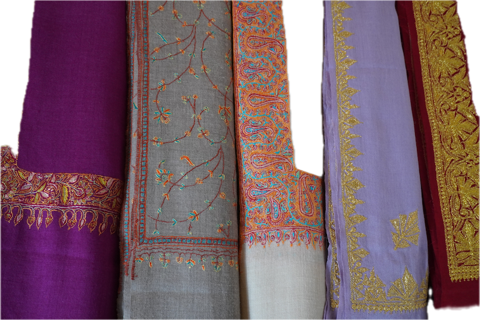
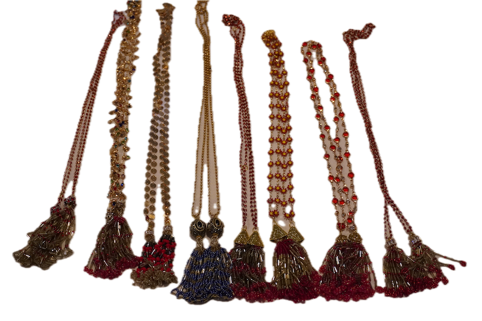
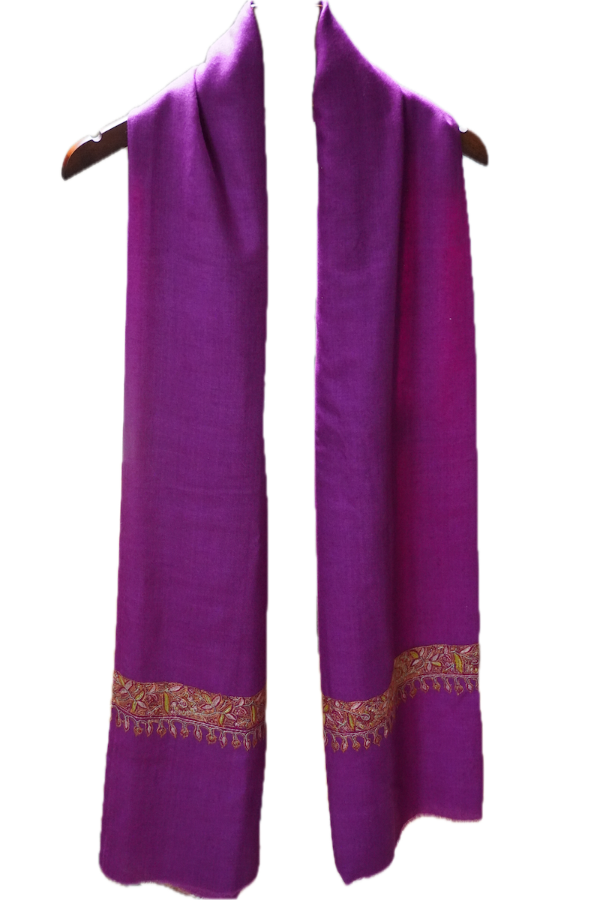
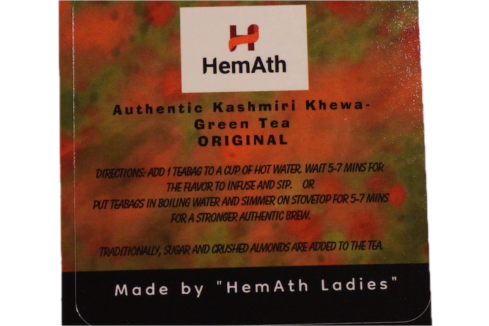

Empowering displaced Kashmiri women through craft and culture.
HemAth preserves Kashmiri heritage while creating meaningful opportunities for women artisans through handmade products, storytelling, and community-centered support.
Explore a growing collection of shawls, Aathor jewelry, garments, and Kashmiri khewa tea — each connected to resilience, identity, and purpose.

From displacement to renewed purpose.
HemAth supports displaced Kashmiri women by preserving traditional skills, promoting economic independence, and creating opportunities through craft and community.
What began as a mission rooted in resilience continues to grow into a product and digital experience that connects more people to Kashmiri heritage.

Handcrafted products with meaning.
HemAth’s products are not just items for sale — they represent culture, resilience, and the work of artisans carrying tradition forward.

Aathor & Jewelry
Traditional handcrafted accessories with beadwork, color, and cultural detail.
View Jewelry
Shawls & Textiles
Elegant embroidered shawls and textiles inspired by Kashmiri craftsmanship.
View Shawls
Kashmiri Khewa
Traditional green tea blends connected to Kashmiri warmth, hospitality, and heritage.
View Tea